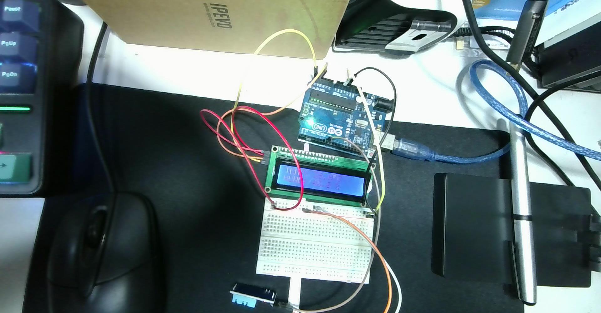

解鎖第一行 TEMP: 與第二行 HUMD: 格式化排版、HD44780 度數符號 (223) 與條紋雜訊排除
在最新的現場上機照片中，Arduino Uno 同時連接了 LCD 1602 與麵包板上的 DHT11：

DHT_Unified_Sensor.ino 時，程式中完全沒有包含 <Wire.h> 與 LiquidCrystal_I2C 驅動指令。因此 LCD 模組通電後，內部的 HD44780 晶片未收到初始化複位訊號，DDRAM 殘留隨機浮動位元，進而呈現出豎條紋。Wire.h 與 LiquidCrystal_I2C.h 的新程式，透過 lcd.init(); lcd.init(); lcd.backlight(); lcd.clear(); 執行軟硬體雙重重置，即可徹底消除條紋，正常顯示文字！| 模組 | 引腳名稱 | 訊號定義 | Arduino Uno 對應腳位 | 導線顏色 | 說明 |
|---|---|---|---|---|---|
| I2C LCD 1602 | GND | 接地 | GND (電源排針/麵包板) | 棕色 / 黑色 | 系統共地 |
| VCC | 電源 5V | 5V (電源排針/麵包板) | 紅色 | 主供電 | |
| SDA | I2C 數據 | A4 (或專用 SDA) | 黃色 | 雙向指令與文字 | |
| SCL | I2C 時脈 | A5 (或專用 SCL) | 黃色 / 橘色 | 同步時鐘訊號 | |
| DHT11 模組 | VCC (+) | 感測電源 | 5V (麵包板電源軌) | 橘色 | 感測器 5V 供電 |
| DATA (S) | 單線訊號 | 數位 Pin 7 | 白色 / 灰線 | 溫濕度微秒脈衝 | |
| GND (-) | 感測接地 | GND (麵包板接地軌) | 棕色 | 共地信號基準 |
第一行顯示 TEMP:，第二行顯示 HUMD:。特別利用 lcd.write(223) 輸出 HD44780 內建的「°」度數符號：
lcd.clear()）：
在輸出 TEMP: 27.5°C 之後加上 "C " 補滿空格，確保舊文字被無縫覆蓋，而不需要在 loop() 呼叫 lcd.clear()，徹底根除液晶閃爍！
#include <Wire.h>
#include <LiquidCrystal_I2C.h>
#include <Adafruit_Sensor.h>
#include <DHT.h>
#include <DHT_U.h>
// --- 1. 設定 DHT 感測器 ---
#define DHTPIN 7 // DHT 接在數位腳位 7
#define DHTTYPE DHT11 // 使用 DHT11 感測器
DHT_Unified dht(DHTPIN, DHTTYPE);
// --- 2. 設定 LCD 螢幕 ---
// 預設 I2C 位址為 0x27，16 個字元寬度、2 行顯示
LiquidCrystal_I2C lcd(0x27, 16, 2);
uint32_t delayMS;
void setup() {
Serial.begin(9600);
// 初始化 LCD 螢幕
lcd.init();
lcd.init(); // 雙重初始化，有效清除上電殘留的條紋雜訊
lcd.backlight(); // 點亮液晶背光
lcd.clear(); // 清空全螢幕
// 初始化 DHT 感測器
dht.begin();
// 取得感測器規格並設定安全延遲時間
sensor_t sensor;
dht.temperature().getSensor(&sensor);
dht.humidity().getSensor(&sensor);
delayMS = sensor.min_delay / 1000;
// DHT11 讀取間隔建議至少 1.5 秒 ~ 2 秒 (1500ms~2000ms)
if (delayMS < 1500) {
delayMS = 1500;
}
}
void loop() {
// 感測器讀取間隔延遲
delay(delayMS);
sensors_event_t event;
// ==========================================
// --- 讀取並顯示溫度 (第一行 Row 0) ---
// ==========================================
dht.temperature().getEvent(&event);
lcd.setCursor(0, 0); // 游標移至第 0 欄、第 0 列 (第一行開頭)
if (isnan(event.temperature)) {
Serial.println(F("Error reading temperature!"));
lcd.print(F("TEMP: Error "));
} else {
// 輸出至序列埠監視器
Serial.print(F("Temperature: "));
Serial.print(event.temperature);
Serial.println(F(" *C"));
// 輸出至 LCD 液晶螢幕第一行
lcd.print(F("TEMP: "));
lcd.print(event.temperature, 1); // 顯示到小數點後 1 位 (例如 27.5)
lcd.write(223); // HD44780 內建 ASCII 223 圓圈「°」度數符號
lcd.print(F("C ")); // 多留空白確保清除前一次殘留文字，免用 clear()
}
// ==========================================
// --- 讀取並顯示濕度 (第二行 Row 1) ---
// ==========================================
dht.humidity().getEvent(&event);
lcd.setCursor(0, 1); // 游標移至第 0 欄、第 1 列 (第二行開頭)
if (isnan(event.relative_humidity)) {
Serial.println(F("Error reading humidity!"));
lcd.print(F("HUMD: Error "));
} else {
// 輸出至序列埠監視器
Serial.print(F("Humidity: "));
Serial.print(event.relative_humidity);
Serial.println(F(" %"));
// 輸出至 LCD 液晶螢幕第二行
lcd.print(F("HUMD: "));
lcd.print(event.relative_humidity, 1); // 顯示到小數點後 1 位 (例如 41.0)
lcd.print(F(" % ")); // 多留空白確保定長覆寫
}
}C:\Users\User\Desktop\onclass\sketch_oct20b\sketch_oct20b.ino C:\Users\User\Desktop\2026-10-20-153902.jpg 利用以下提示詞讓AI協助整合 整合這個程式 讓溫溼度顯示在螢幕上 第一行顯示 TEMP: 第二行顯示HUMD:變更摘要：依據使用者上傳的實拍硬體照片（2026-10-20-153902.jpg）診斷螢幕條紋雜訊成因（未初始化 I2C 匯流排），並將 sketch_oct20b.ino 優化整合為具備雙重初始化、HD44780 ASCII 223 度數符號輸出、定長防閃爍覆蓋與完備錯誤容錯機制的溫濕度即時顯示系統，第一行顯示 TEMP:、第二行顯示 HUMD:，產出對應 Markdown、HTML 與 INO 實作檔案。